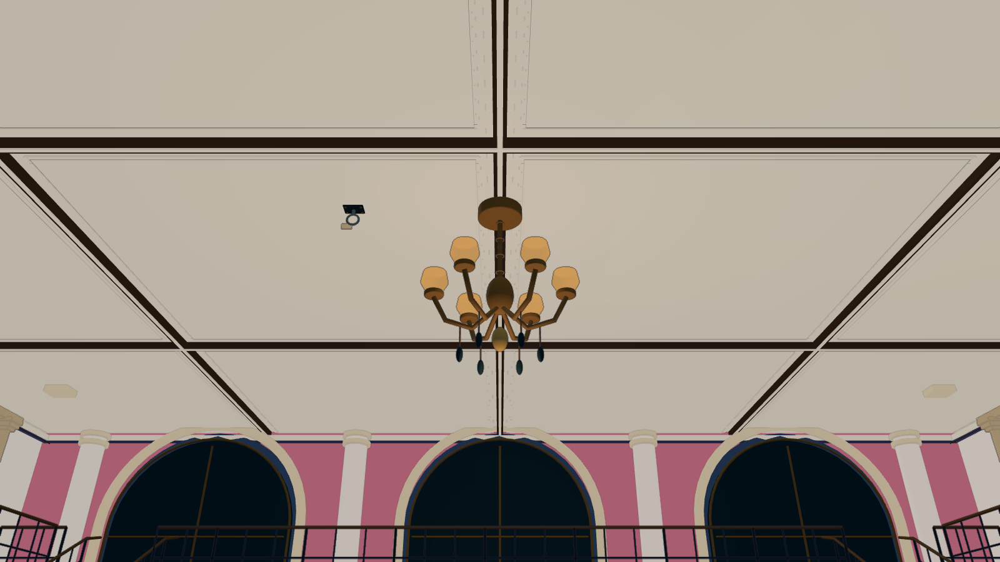

“说得好听”之后，
还要能帮上忙。
游戏里的提示很容易写得像诗，却没有告诉玩家该操作哪个部件；对白也可能提前宣布一件尚未发生的事。我想把故事的情绪、场景的事实与玩家此刻要做的动作，放在同一套判断标准里。
《镜外》原作由我提出故事、玩法和视觉方向，通过 Codex 协作制作 Unity 首章。本次为真实首章导出 Unity WebGL，让作品集访客直接游玩；同时增加可操作的提示校准工具。
Unity · 摄影 · 叙事
23:17，吊灯即将落下。
你能改变这十二秒，
但艾达会忘记它。
Unity 首章 · 电脑与键鼠
首次加载需要等待游戏资源。

先看见，再介入。
在浏览器里，直接走入 Unity 的电影布景。
她想活下来，也想留下一张合影。
你的救法，将成为照片里的证据。
首次载入需要下载游戏资源，请稍候。
电脑 · 键盘与鼠标体验。载入后点击游戏画面，进入控制。
先看桌上来函 对准后 E 阅读；拿起 25 号片盘，装入放映机，再拍墙上的 025 海报。
WASD 移动 C / 右键 举镜 E 操作 G 放下 T 排演 Esc 暂停
这是原作 Unity 首章的浏览器构建。故事、三种救援与后续检修在游戏里展开。遇到问题可按 I 查看场记簿，或打开上方操作说明。
02 / WORDS NEED EVIDENCE
场景变了，回答也该变。把“哪里不对”拆成四条标准，
给两个候选打分，并留下你的理由。
03 / MAKING WITH AI
一个摄影叙事游戏，如何成为 AI 表达的测试现场。
游戏里的提示很容易写得像诗，却没有告诉玩家该操作哪个部件；对白也可能提前宣布一件尚未发生的事。我想把故事的情绪、场景的事实与玩家此刻要做的动作，放在同一套判断标准里。
《镜外》原作由我提出故事、玩法和视觉方向，通过 Codex 协作制作 Unity 首章。本次为真实首章导出 Unity WebGL，让作品集访客直接游玩；同时增加可操作的提示校准工具。
我提供摄影介入、人物关系、十二秒代价与三条救法，提出“体验简陋、需要优化”的目标。Codex 阅读真实工程与构建资料，协助核对角色、按键与封存告知，导出浏览器版本，编写评估样例，并执行浏览器操作检查。
本次规则与样例是可供继续审阅的设计结果。自动操作验证功能；情绪是否准确，仍需要真人判断。
含糊指引伸缩撑杆 · 拿起 · 寻找细节
可执行指引把撑杆移到灯下；转动低位握轮，让托头接触灯底，再锁止。按 T 排演确认。
标准：必须写出对象、动作与完成条件；提示随真实状态改变；失败后说明可恢复的下一步。原信“到柜”和“亲收”是两个状态，完整合影也不能免除记忆代价。
游戏包含三种实物救援、摄影构图、可失败的排演、封存记忆代价、同一原信的交付及后续检修。新增提示校准页支持人工候选的两两比较与 JSONL 标注导出。
场景来自原作 Unity 首章。封面与参考帧来自 Windows v1.3.8，浏览器版的构建与检查范围另记于交付说明。提示实验室使用人工样例；目前没有联网模型调用、自动评判情绪或实际训练模型。
